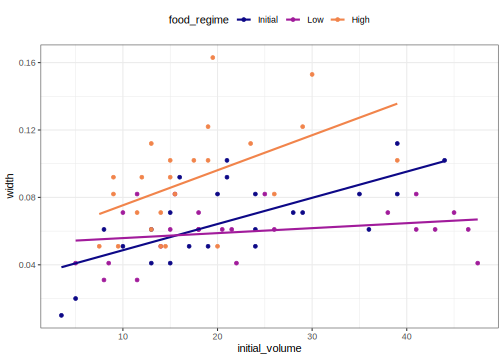
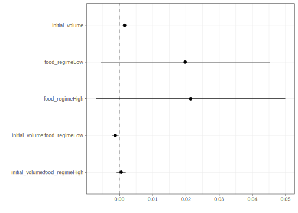
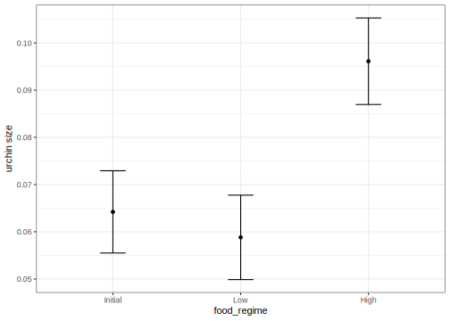
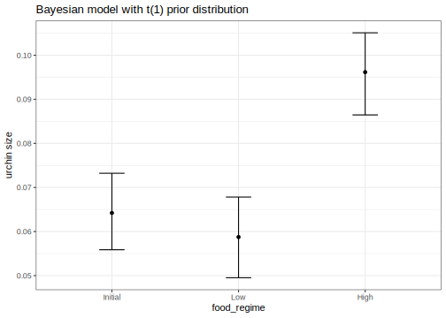

library(tidymodels) # for the parsnip package, along with the rest of tidymodels
# Helper packages
library(readr) # for importing data
library(broom.mixed) # for converting bayesian models to tidy tibbles
library(dotwhisker) # for visualizing regression resultsBuild a model
model fitting
parsnip
broom
Get started by learning how to specify and train a model using tidymodels.
Introduction
How do you create a statistical model using tidymodels? In this article, we will walk you through the steps. We start with data for modeling, learn how to specify and train models with different engines using the parsnip package, and understand why these functions are designed this way.
To use code in this article, you will need to install the following packages: broom.mixed, dotwhisker, readr, rstanarm, and tidymodels.
The Sea Urchins Data
Let’s use the data from Constable (1993) to explore how three different feeding regimes affect the size of sea urchins over time. The initial size of the sea urchins at the beginning of the experiment probably affects how big they grow as they are fed.
To start, let’s read our urchins data into R, which we’ll do by providing readr::read_csv() with a url where our CSV data is located (“https://tidymodels.org/start/models/urchins.csv”):
urchins <-
# Data were assembled for a tutorial
# at https://www.flutterbys.com.au/stats/tut/tut7.5a.html
read_csv("https://tidymodels.org/start/models/urchins.csv") %>%
# Change the names to be a little more verbose
setNames(c("food_regime", "initial_volume", "width")) %>%
# Factors are very helpful for modeling, so we convert one column
mutate(food_regime = factor(food_regime, levels = c("Initial", "Low", "High")))
#> Rows: 72 Columns: 3
#> ── Column specification ──────────────────────────────────────────────
#> Delimiter: ","
#> chr (1): TREAT
#> dbl (2): IV, SUTW
#>
#> ℹ Use `spec()` to retrieve the full column specification for this data.
#> ℹ Specify the column types or set `show_col_types = FALSE` to quiet this message.Let’s take a quick look at the data:
urchins
#> # A tibble: 72 × 3
#> food_regime initial_volume width
#> <fct> <dbl> <dbl>
#> 1 Initial 3.5 0.01
#> 2 Initial 5 0.02
#> 3 Initial 8 0.061
#> 4 Initial 10 0.051
#> 5 Initial 13 0.041
#> 6 Initial 13 0.061
#> 7 Initial 15 0.041
#> 8 Initial 15 0.071
#> 9 Initial 16 0.092
#> 10 Initial 17 0.051
#> # ℹ 62 more rowsThe urchins data is a tibble. If you are new to tibbles, the best place to start is the tibbles chapter in R for Data Science. For each of the 72 urchins, we know their:
- experimental feeding regime group (
food_regime: eitherInitial,Low, orHigh), - size in milliliters at the start of the experiment (
initial_volume), and - suture width at the end of the experiment (
width).
As a first step in modeling, it’s always a good idea to plot the data:
ggplot(urchins,
aes(x = initial_volume,
y = width,
group = food_regime,
col = food_regime)) +
geom_point() +
geom_smooth(method = lm, se = FALSE) +
scale_color_viridis_d(option = "plasma", end = .7)
#> `geom_smooth()` using formula = 'y ~ x'
We can see that urchins that were larger in volume at the start of the experiment tended to have wider sutures at the end, but the slopes of the lines look different so this effect may depend on the feeding regime condition.
Build and fit a model
A standard two-way analysis of variance (ANOVA) model makes sense for this dataset because we have both a continuous predictor and a categorical predictor. Since the slopes appear to be different for at least two of the feeding regimes, let’s build a model that allows for two-way interactions. Specifying an R formula with our variables in this way:
width ~ initial_volume * food_regimeallows our regression model depending on initial volume to have separate slopes and intercepts for each food regime.
For this kind of model, ordinary least squares is a good initial approach. With tidymodels, we start by specifying the functional form of the model that we want using the parsnip package. Since there is a numeric outcome and the model should be linear with slopes and intercepts, the model type is “linear regression”. We can declare this with:
linear_reg()
#> Linear Regression Model Specification (regression)
#>
#> Computational engine: lmThat is pretty underwhelming since, on its own, it doesn’t really do much. However, now that the type of model has been specified, we can think about a method for fitting or training the model, the model engine. The engine value is often a mash-up of the software that can be used to fit or train the model as well as the estimation method. The default for linear_reg() is "lm" for ordinary least squares, as you can see above. We could set a non-default option instead:
linear_reg() %>%
set_engine("keras")
#> Linear Regression Model Specification (regression)
#>
#> Computational engine: kerasThe documentation page for linear_reg() lists all the possible engines. We’ll save our model object using the default engine as lm_mod.
lm_mod <- linear_reg()From here, the model can be estimated or trained using the fit() function:
lm_fit <-
lm_mod %>%
fit(width ~ initial_volume * food_regime, data = urchins)
lm_fit
#> parsnip model object
#>
#>
#> Call:
#> stats::lm(formula = width ~ initial_volume * food_regime, data = data)
#>
#> Coefficients:
#> (Intercept) initial_volume
#> 0.0331216 0.0015546
#> food_regimeLow food_regimeHigh
#> 0.0197824 0.0214111
#> initial_volume:food_regimeLow initial_volume:food_regimeHigh
#> -0.0012594 0.0005254Perhaps our analysis requires a description of the model parameter estimates and their statistical properties. Although the summary() function for lm objects can provide that, it gives the results back in an unwieldy format. Many models have a tidy() method that provides the summary results in a more predictable and useful format (e.g. a data frame with standard column names):
tidy(lm_fit)
#> # A tibble: 6 × 5
#> term estimate std.error statistic p.value
#> <chr> <dbl> <dbl> <dbl> <dbl>
#> 1 (Intercept) 0.0331 0.00962 3.44 0.00100
#> 2 initial_volume 0.00155 0.000398 3.91 0.000222
#> 3 food_regimeLow 0.0198 0.0130 1.52 0.133
#> 4 food_regimeHigh 0.0214 0.0145 1.47 0.145
#> 5 initial_volume:food_regimeLow -0.00126 0.000510 -2.47 0.0162
#> 6 initial_volume:food_regimeHigh 0.000525 0.000702 0.748 0.457This kind of output can be used to generate a dot-and-whisker plot of our regression results using the dotwhisker package:
tidy(lm_fit) %>%
dwplot(dot_args = list(size = 2, color = "black"),
whisker_args = list(color = "black"),
vline = geom_vline(xintercept = 0, colour = "grey50", linetype = 2))
Use a model to predict
This fitted object lm_fit has the lm model output built-in, which you can access with lm_fit$fit, but there are some benefits to using the fitted parsnip model object when it comes to predicting.
Suppose that, for a publication, it would be particularly interesting to make a plot of the mean body size for urchins that started the experiment with an initial volume of 20ml. To create such a graph, we start with some new example data that we will make predictions for, to show in our graph:
new_points <- expand.grid(initial_volume = 20,
food_regime = c("Initial", "Low", "High"))
new_points
#> initial_volume food_regime
#> 1 20 Initial
#> 2 20 Low
#> 3 20 HighTo get our predicted results, we can use the predict() function to find the mean values at 20ml.
It is also important to communicate the variability, so we also need to find the predicted confidence intervals. If we had used lm() to fit the model directly, a few minutes of reading the documentation page for predict.lm() would explain how to do this. However, if we decide to use a different model to estimate urchin size (spoiler: we will!), it is likely that a completely different syntax would be required.
Instead, with tidymodels, the types of predicted values are standardized so that we can use the same syntax to get these values.
First, let’s generate the mean body width values:
mean_pred <- predict(lm_fit, new_data = new_points)
mean_pred
#> # A tibble: 3 × 1
#> .pred
#> <dbl>
#> 1 0.0642
#> 2 0.0588
#> 3 0.0961When making predictions, the tidymodels convention is to always produce a tibble of results with standardized column names. This makes it easy to combine the original data and the predictions in a usable format:
conf_int_pred <- predict(lm_fit,
new_data = new_points,
type = "conf_int")
conf_int_pred
#> # A tibble: 3 × 2
#> .pred_lower .pred_upper
#> <dbl> <dbl>
#> 1 0.0555 0.0729
#> 2 0.0499 0.0678
#> 3 0.0870 0.105
# Now combine:
plot_data <-
new_points %>%
bind_cols(mean_pred) %>%
bind_cols(conf_int_pred)
# and plot:
ggplot(plot_data, aes(x = food_regime)) +
geom_point(aes(y = .pred)) +
geom_errorbar(aes(ymin = .pred_lower,
ymax = .pred_upper),
width = .2) +
labs(y = "urchin size")
Model with a different engine
Every one on your team is happy with that plot except that one person who just read their first book on Bayesian analysis. They are interested in knowing if the results would be different if the model were estimated using a Bayesian approach. In such an analysis, a prior distribution needs to be declared for each model parameter that represents the possible values of the parameters (before being exposed to the observed data). After some discussion, the group agrees that the priors should be bell-shaped but, since no one has any idea what the range of values should be, to take a conservative approach and make the priors wide using a Cauchy distribution (which is the same as a t-distribution with a single degree of freedom).
The documentation on the rstanarm package shows us that the stan_glm() function can be used to estimate this model, and that the function arguments that need to be specified are called prior and prior_intercept. It turns out that linear_reg() has a stan engine. Since these prior distribution arguments are specific to the Stan software, they are passed as arguments to parsnip::set_engine(). After that, the same exact fit() call is used:
# set the prior distribution
prior_dist <- rstanarm::student_t(df = 1)
set.seed(123)
# make the parsnip model
bayes_mod <-
linear_reg() %>%
set_engine("stan",
prior_intercept = prior_dist,
prior = prior_dist)
# train the model
bayes_fit <-
bayes_mod %>%
fit(width ~ initial_volume * food_regime, data = urchins)
print(bayes_fit, digits = 5)
#> parsnip model object
#>
#> stan_glm
#> family: gaussian [identity]
#> formula: width ~ initial_volume * food_regime
#> observations: 72
#> predictors: 6
#> ------
#> Median MAD_SD
#> (Intercept) 0.03336 0.01003
#> initial_volume 0.00156 0.00040
#> food_regimeLow 0.01963 0.01308
#> food_regimeHigh 0.02120 0.01421
#> initial_volume:food_regimeLow -0.00126 0.00051
#> initial_volume:food_regimeHigh 0.00054 0.00070
#>
#> Auxiliary parameter(s):
#> Median MAD_SD
#> sigma 0.02129 0.00188
#>
#> ------
#> * For help interpreting the printed output see ?print.stanreg
#> * For info on the priors used see ?prior_summary.stanregThis kind of Bayesian analysis (like many models) involves randomly generated numbers in its fitting procedure. We can use set.seed() to ensure that the same (pseudo-)random numbers are generated each time we run this code. The number 123 isn’t special or related to our data; it is just a “seed” used to choose random numbers.
To update the parameter table, the tidy() method is once again used:
tidy(bayes_fit, conf.int = TRUE)
#> # A tibble: 6 × 5
#> term estimate std.error conf.low conf.high
#> <chr> <dbl> <dbl> <dbl> <dbl>
#> 1 (Intercept) 0.0334 0.0100 0.0179 0.0493
#> 2 initial_volume 0.00156 0.000404 0.000876 0.00219
#> 3 food_regimeLow 0.0196 0.0131 -0.00271 0.0414
#> 4 food_regimeHigh 0.0212 0.0142 -0.00289 0.0455
#> 5 initial_volume:food_regimeLow -0.00126 0.000515 -0.00213 -0.000364
#> 6 initial_volume:food_regimeHigh 0.000541 0.000696 -0.000669 0.00174A goal of the tidymodels packages is that the interfaces to common tasks are standardized (as seen in the tidy() results above). The same is true for getting predictions; we can use the same code even though the underlying packages use very different syntax:
bayes_plot_data <-
new_points %>%
bind_cols(predict(bayes_fit, new_data = new_points)) %>%
bind_cols(predict(bayes_fit, new_data = new_points, type = "conf_int"))
ggplot(bayes_plot_data, aes(x = food_regime)) +
geom_point(aes(y = .pred)) +
geom_errorbar(aes(ymin = .pred_lower, ymax = .pred_upper), width = .2) +
labs(y = "urchin size") +
ggtitle("Bayesian model with t(1) prior distribution")
This isn’t very different from the non-Bayesian results (except in interpretation).
Note
The parsnip package can work with many model types, engines, and arguments. Check out tidymodels.org/find/parsnip to see what is available.
Why does it work that way?
The extra step of defining the model using a function like linear_reg() might seem superfluous since a call to lm() is much more succinct. However, the problem with standard modeling functions is that they don’t separate what you want to do from the execution. For example, the process of executing a formula has to happen repeatedly across model calls even when the formula does not change; we can’t recycle those computations.
Also, using the tidymodels framework, we can do some interesting things by incrementally creating a model (instead of using single function call). Model tuning with tidymodels uses the specification of the model to declare what parts of the model should be tuned. That would be very difficult to do if linear_reg() immediately fit the model.
If you are familiar with the tidyverse, you may have noticed that our modeling code uses the magrittr pipe (%>%). With dplyr and other tidyverse packages, the pipe works well because all of the functions take the data as the first argument. For example:
urchins %>%
group_by(food_regime) %>%
summarize(med_vol = median(initial_volume))
#> # A tibble: 3 × 2
#> food_regime med_vol
#> <fct> <dbl>
#> 1 Initial 20.5
#> 2 Low 19.2
#> 3 High 15whereas the modeling code uses the pipe to pass around the model object:
bayes_mod %>%
fit(width ~ initial_volume * food_regime, data = urchins)This may seem jarring if you have used dplyr a lot, but it is extremely similar to how ggplot2 operates:
ggplot(urchins,
aes(initial_volume, width)) + # returns a ggplot object
geom_jitter() + # same
geom_smooth(method = lm, se = FALSE) + # same
labs(x = "Volume", y = "Width") # etcSession information
#> ─ Session info ─────────────────────────────────────────────────────
#> setting value
#> version R version 4.3.0 (2023-04-21)
#> os macOS Monterey 12.6
#> system aarch64, darwin20
#> ui X11
#> language (EN)
#> collate en_US.UTF-8
#> ctype en_US.UTF-8
#> tz America/Los_Angeles
#> date 2023-05-25
#> pandoc 3.1.1 @ /Applications/RStudio.app/Contents/Resources/app/quarto/bin/tools/ (via rmarkdown)
#>
#> ─ Packages ─────────────────────────────────────────────────────────
#> package * version date (UTC) lib source
#> broom * 1.0.4 2023-03-11 [1] CRAN (R 4.3.0)
#> broom.mixed * 0.2.9.4 2022-04-17 [1] CRAN (R 4.3.0)
#> dials * 1.2.0 2023-04-03 [1] CRAN (R 4.3.0)
#> dotwhisker * 0.7.4 2021-09-02 [1] CRAN (R 4.3.0)
#> dplyr * 1.1.2 2023-04-20 [1] CRAN (R 4.3.0)
#> ggplot2 * 3.4.2 2023-04-03 [1] CRAN (R 4.3.0)
#> infer * 1.0.4 2022-12-02 [1] CRAN (R 4.3.0)
#> parsnip * 1.1.0 2023-04-12 [1] CRAN (R 4.3.0)
#> purrr * 1.0.1 2023-01-10 [1] CRAN (R 4.3.0)
#> readr * 2.1.4 2023-02-10 [1] CRAN (R 4.3.0)
#> recipes * 1.0.6 2023-04-25 [1] CRAN (R 4.3.0)
#> rlang 1.1.1 2023-04-28 [1] CRAN (R 4.3.0)
#> rsample * 1.1.1 2022-12-07 [1] CRAN (R 4.3.0)
#> rstanarm * 2.21.4 2023-04-08 [1] CRAN (R 4.3.0)
#> tibble * 3.2.1 2023-03-20 [1] CRAN (R 4.3.0)
#> tidymodels * 1.1.0 2023-05-01 [1] CRAN (R 4.3.0)
#> tune * 1.1.1 2023-04-11 [1] CRAN (R 4.3.0)
#> workflows * 1.1.3 2023-02-22 [1] CRAN (R 4.3.0)
#> yardstick * 1.2.0 2023-04-21 [1] CRAN (R 4.3.0)
#>
#> [1] /Users/emilhvitfeldt/Library/R/arm64/4.3/library
#> [2] /Library/Frameworks/R.framework/Versions/4.3-arm64/Resources/library
#>
#> ────────────────────────────────────────────────────────────────────